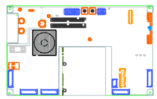

|
Tip |
During the different stages of product development there are constant changes in the design. Frequently, changes are not evident to the designers and analysts involved. |
You have been given the latest revision of a PCA.
To carry out different types of analyses, you need to find the changes and update your old NX file.
You must:
Open your current revision.
Compare and update your model with information from another ECAD model.
In this activity, you will learn how to:
Compare ECAD models with NX models to find changes.
Manage PC Assembly updates.
